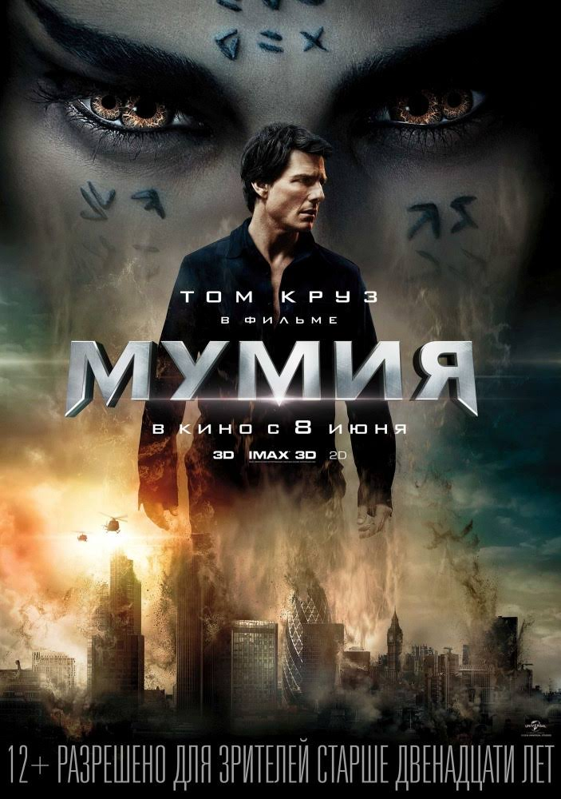
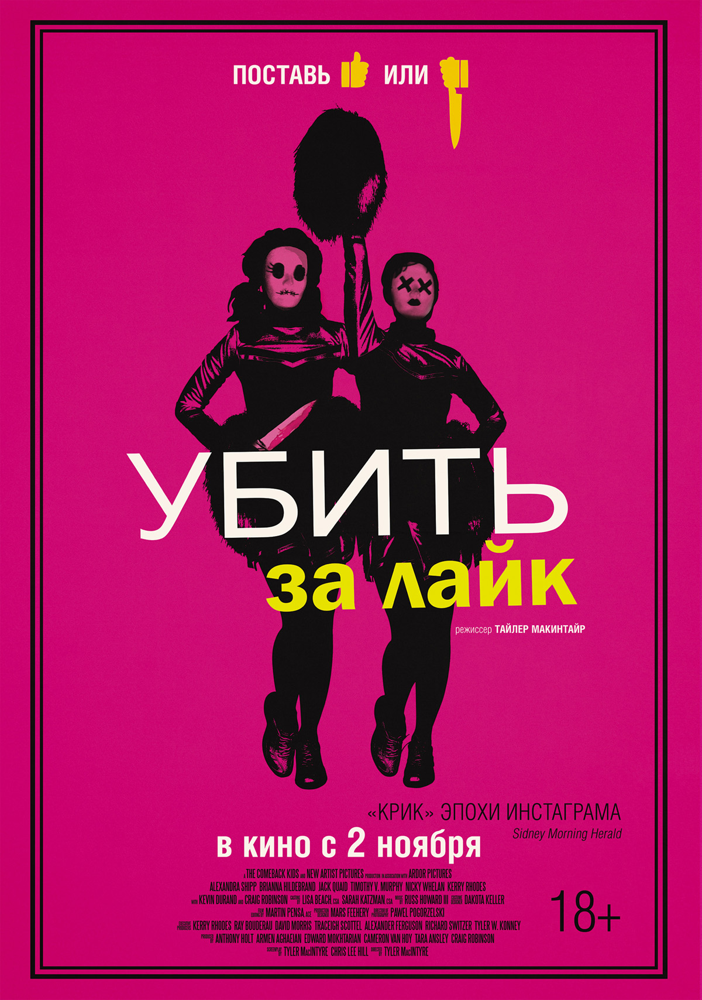
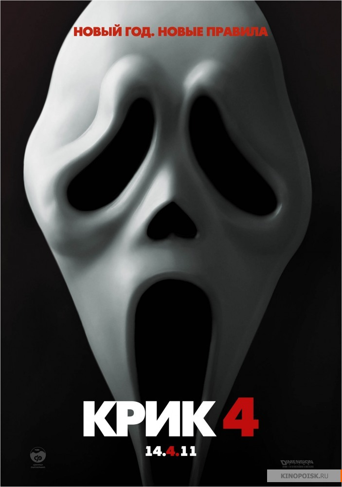

Мумия
Посреди безжалостной пустыни в величественном саркофаге погребена дочь египетского фараона, но настанет день, и она явится в наш мир вернуть себе то, что принадлежит ей по праву. Отныне миром правят боги и монстры..

Убить за лайк
Две подружки-старшеклассницы одержимы мечтой стать звездами социальных сетей. Но, как известно, хорошими делами прославиться нельзя. Поэтому они заводят блог «Кошмарные девчонки», в котором смачно комментируют трагедии и несчастные случаи, происходящие в их городке. Количество подписчиков растет, но для новых лайков требуются новые кровавые репортажи. Амбициозные девушки, ощущая острую нехватку материала, принимаются убивать всех, кто мешает им по жизни, совмещая «приятное» с «полезным»…
Проклятие Аннабель
Джон находит идеальный подарок для своей будущей жены — это редкая старинная кукла в белом свадебном платье. Но восторг от подарка продлился не долго. Однажды ночью в их дом вторгаются члены сатанинского культа…
Зловещие мертвецы
Молодые люди снимают на выходные загородный дом. Находится он в непролазной глуши, выглядит мрачно, а кругом — ни души. Аренда стоит копейки, но не потому, что он того и гляди развалится…

Крик 4
Спустя 15 лет после событий первого фильма Сидни, ставшая местной звездой, возвращается в родной город Вудсборо, чтобы принять участие в мероприятиях, посвящённых памяти погибших, а также в рамках промоакции по продвижению своей автобиографии «Из темноты». Между тем, Дьюи Райли продолжает исполнять обязанности шерифа города, а Гейл Уэзерс, ставшая его женой, теряет вкус к жизни и томится в роли тихой домохозяйки. Накануне приезда Сидни неизвестный в костюме Призрачного лица убивает двух местных школьниц, Дженни Рэндалл и Марни Купер, а мобильный телефон, с которого ей звонили, обнаружен в багажнике машины Сидни.
 Корзина
Корзина